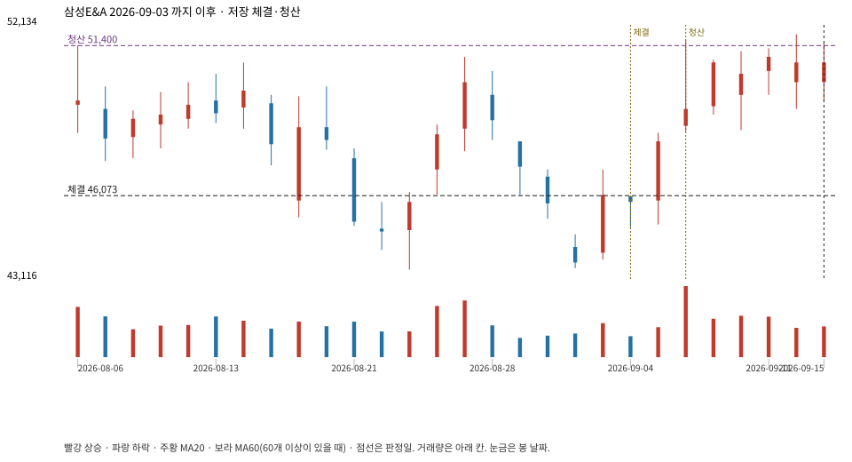

계좌를 다시 돌리지 않았다. 아래는 저장된 주문·체결·청산·비용·손익이다.

{
"case_id": "f3ca3300dedf1271",
"status": "closed",
"trade": {
"symbol": "028050.KS",
"signal_date": "2026-09-03",
"quantity": 340,
"entry": 46100,
"stop": 42911,
"target": 51400,
"planned_risk": 1121811.3151299988,
"reserved_cash": 15689673.999999998,
"fill": {
"date": "2026-09-04",
"price": 46073.024999999994,
"fee": 15664.828499999998
},
"exit": {
"date": "2026-09-08",
"price": 51400,
"reason": "target",
"net_pnl": 1778030.671500003,
"ambiguous_bar": false
}
},
"cost": "research fee 10bp each side, slippage 5bp; amounts below are the stored ledger, not a new run",
"chart": "c\/f3ca3300dedf1271.svg"
}